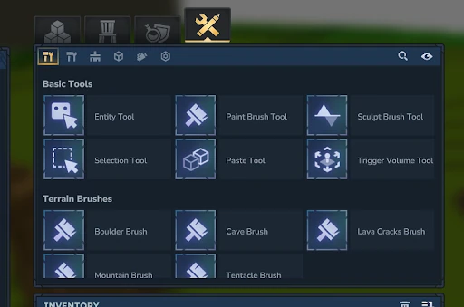
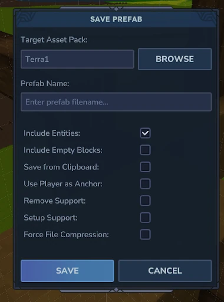

Guide written by @andianerjones
How to Create and Save Prefabs
Before a Prefab can be used in WorldGen, we first need to build and save the object we want to generate.
This can be anything from a simple rock or tree to a more complex building or structure.
Step 1: Build Your Prefab
First, manually build the object you want to save as a Prefab.
I personally recommend building Prefabs separately from the surrounding terrain, preferably floating in the air.
This makes it easier to select the entire structure without accidentally including unnecessary terrain blocks or other objects.
It also helps identify any unwanted blocks that might otherwise be saved as part of the Prefab.
Step 2: Select Your Prefab
Once your object is finished, use the Selection Tool to mark the entire structure.

Make sure that:
Every block belonging to the Prefab is included in the selection.
No unnecessary blocks from the surrounding environment are selected.
There are no accidental floating blocks or leftover construction materials.
The entire object is contained within the selection boundaries.
The goal is to create a clean, independent Prefab that contains only the blocks and entities you actually want to generate later.
Step 3: Save Your Prefab
After selecting the complete structure, use the following command:
/prefab save
This opens a window where you can configure how your Prefab should be saved.

Here you can:
Select the Mod: Choose the Mod in which you want to store your Prefab.
Set the Prefab Name: Assign a unique name to identify the Prefab later.
Once saved, the Prefab can be referenced and used within WorldGen through its file path.
Step 4: Naming Your Prefabs
I strongly recommend using unique and descriptive names for every Prefab.
A consistent naming convention makes it significantly easier to organize, identify, and reuse Prefabs, especially when working with hundreds of different objects.
Personally, I prefer naming Prefabs based on their object type, category, size, and variation.
Examples:
For trees:
Tree_Birch_Small_1
Tree_Birch_Small_2
Tree_Birch_Small_3
For buildings:
Building_City_Redwood_House_1
Building_City_Redwood_House_2
This naming structure allows you to quickly recognize what each Prefab represents without having to open the file.
It also makes it easier to organize Prefabs into different folders later.
In summary: Creating a Prefab involves building an object, selecting it completely with the Select Tool, and saving it using /prefab save. Clean selections and consistent naming conventions are particularly important for keeping larger WorldGen projects organized and manageable.
Important Note: Save Unfinished Prefabs
When building Prefabs in the same world where you are actively working with WorldGen, it is extremely important to regularly save your progress, including unfinished Prefabs.
Certain WorldGen commands, such as /preview radius 10, can regenerate large areas of the terrain and potentially delete entire structures or buildings that you have manually created.
This means that even a nearly completed Prefab could be lost if it has not been saved beforehand.
To avoid losing your work, I recommend:
Save unfinished Prefabs: Always save your Prefabs before closing the game, even if they are not yet completed.
Build in a separate world: If possible, create your Prefabs outside your active WorldGen environment to reduce the risk of accidentally deleting them.
Save before using WorldGen commands: Be particularly careful when using commands that regenerate or update terrain.
Building Prefabs directly inside your WorldGen world can still be useful, especially when you want to adapt structures to specific terrain shapes or environmental conditions.
However, if you choose this approach, always save your Prefabs before closing the game or executing WorldGen commands that could modify the surrounding terrain.
My personal tip: Save your Prefabs regularly, even during construction. It only takes a moment to save your progress, but it can prevent you from losing hours of work.
How are Prefabs stored?
Prefabs are saved as individual files within a folder structure.
Each Prefab can be loaded into WorldGen by referencing its file path.
This allows us to organize different Prefabs into categories, such as trees, rocks, buildings, or decorations, and reuse them across multiple WorldGen configurations.
In summary: Prefabs are reusable collections of blocks and entities that allow us to populate our terrain with vegetation, structures, and environmental details. They are an essential part of transforming a basic terrain shape into a detailed and immersive world.
What are Prefabs?
Prefabs are predefined and saved collections of blocks and/or entities that represent specific objects or structures. They can be reused and placed into the world as complete objects / Prefabs
A Prefab can consist of simple decorations or more complex structures, such as:
Vegetation: Trees, bushes, flowers, and other plants.
Natural Objects: Rocks, boulders, and fallen trees.
Structures: Buildings, ruins, bridges, and other constructions.
Decorations: Small environmental details that make the world feel more natural and alive.
How are Prefabs used in WorldGen?
Prefabs play an important role in WorldGen, as they allow us to populate the terrain with objects and structures.
While the Terrain system primarily defines the shape and basic structure of the landscape, Prefabs are used to bring that landscape to life by adding vegetation, buildings, natural objects, and other environmental details.
Through the Node Editor, we can control how and where Prefabs are generated.
This includes various settings and functions for:
Placement: Defining where Prefabs can spawn.
Positioning: Controlling their location within the terrain.
Rotation: Adjusting their orientation to create more natural variations.
Distribution: Controlling how frequently and under which conditions Prefabs appear.
Localization: Using different functions and conditions to determine suitable spawning locations.
By combining these options, we can create more diverse and natural-looking environments instead of manually placing every individual object.
How do Prefabs interact with Chunks?
An important aspect of WorldGen is the performance and loading efficiency of the generated world. Prefabs play a significant role in this, especially when dealing with large structures or a high number of objects.
Prefabs and Chunk Loading
In WorldGen, the world is divided into Chunks, which are individual sections of the map that are generated and loaded separately.
When a Prefab is placed within a single Chunk, its blocks can be generated as part of that Chunk.
However, if a Prefab extends beyond the boundaries of its original Chunk, it may affect multiple Chunks.
For example:
Small Prefabs: A rock or small tree that fits entirely within one Chunk only affects that particular Chunk.
Medium Prefabs: A larger tree or structure that extends across two Chunks requires blocks to be generated in both Chunks.
Large Prefabs: A building or massive structure that spans several Chunks can affect multiple sections of the world.
Performance Considerations
The more Chunks a Prefab affects, the more complex its generation and placement can become.
Large Prefabs that extend across multiple Chunks may require additional processing to ensure that the entire structure is generated correctly.
This becomes particularly important when using many large Prefabs within the same area, as their combined generation workload can increase loading times and potentially cause performance issues.
However, the performance impact does not depend solely on the number of Chunks a Prefab occupies. Other factors, such as the total number of blocks, entities, generation frequency, and the WorldGen system's handling of cross-Chunk structures, also influence performance.
Best Practices
To keep WorldGen performance efficient:
Prefer smaller Prefabs where possible, especially for frequently generated decorations.
Avoid excessive use of large Prefabs that span multiple Chunks.
Consider the generation frequency of complex structures.
Test loading and generation performance when working with large numbers of Prefabs.
In summary: Prefabs that extend across multiple Chunks can increase the complexity and processing requirements of world generation. While large Prefabs are useful for creating detailed environments, their size, complexity, and frequency should be considered to maintain good WorldGen performance.
Next Up